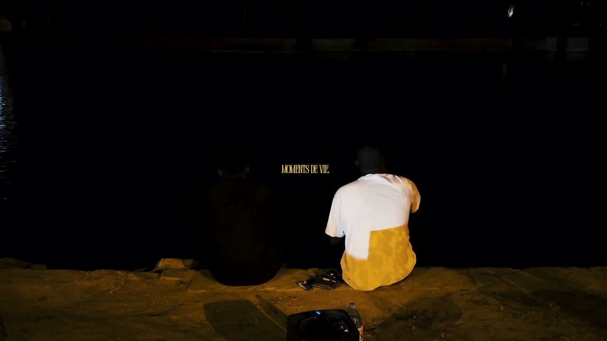
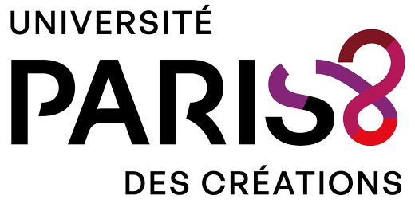
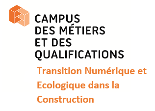
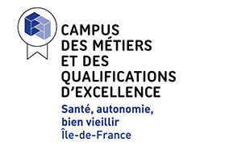
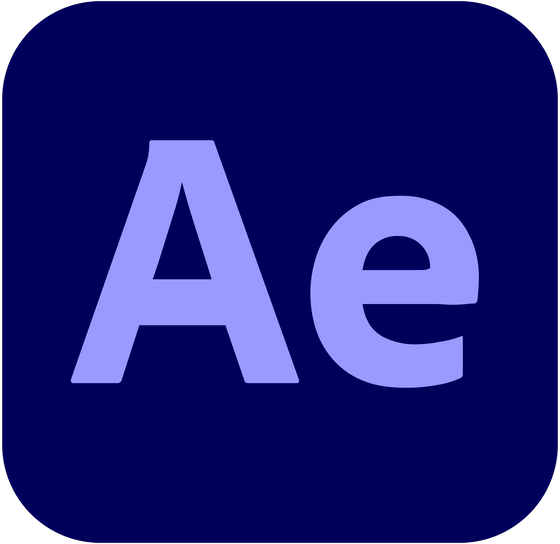

Portfolio — 2026
MARLON MPOKO NKOTE
Étudiant en Master Création et Expérience Numériques à l'université Paris 8, je filme et je monte des vidéos, et j'ai des compétences en création visuelle.
Je recherche une alternance pour septembre 2026 comme monteur, monteur‑cadreur ou créateur de contenu, et plus largement sur tout poste touchant à l'audiovisuel et au social media.
PROJETS RÉCENTS
A PROPOS DE MOI
JE SUIS UN ÉTUDIANT INTÉRESSÉ PAR LA CRÉATION GRAPHIQUE ET LA PRODUCTION AUDIOVISUELLE, SOUHAITANT ÉVOLUER DANS CE DOMAINE POUR DÉVELOPPER PLEINEMENT MON POTENTIEL.
Je m'appelle Marlon Mpoko Nkote, j'ai 22 ans et je réside en banlieue parisienne, plus précisément dans la ville de Ris-Orangis. Actuellement, je suis étudiant en deuxième année de Master Création et Expérience Numériques de la mention Humanités Numériques
Cette formation me permet de développer des compétences dans divers domaines, la création numérique, l'audiovisuel, la communication et le développement web.
En ce qui concerne mes centres d'intérêt personnels, j'apprécie beaucoup le football, un sport que j'ai pratiqué dans ma jeunesse, et que je continue à pratiquer de manière occasionnelle, et les mangas/films d'animation japonais que je regarde depuis mon enfance.
ENSEIGNE & Scolarité




MES
COMPÉTENCES
COMMUNICATION
Lors de projets de groupe, nous avons effectué l'ensemble de la communication d'un projet, impliquant la conception d'une stratégie de communication, la réalisation d'un benchmark, ainsi que l'audit de communication.
AUDIOVISIUEL
Au fil de ma formation, j'ai développé mes compétences en montage vidéo et audio sur le logiciel d'Adobe Premiere Pro..
3D
J'ai réalisé plusieurs projets en 3D sur différents logiciels, ce qui m'a permis de développer mes compétences dans ce domaine.
MOTION DESIGN
Au cours de ma formation, j'ai effectué plusieurs travaux qui ont contribué au développement de mes compétences sur la suite Adobe. Ces projets m'ont également offert l'opportunité d'explorer davantage ma créativité.
WEB
Au fil de ma formation, j'ai mené différents projets qui ont été déterminants pour l'élargissement de mes compétences en développement. Plus particulièrement, j'ai acquis des compétences dans la création de sites web en utilisant des langages tels que HTML/CSS sur Visual Studio Code.
EXPERIENCE
CAMPUS DES METIERS ET DES QUALIFICATIONS D 'EXELLENCE
CHARGE DE COMMUNICATION
AVRIL 2025 - JUILLET 2025
- Conception de contenus pour les résaux sociaux, sites internet et documents print des Campus.
- Support à l'animation et l'organisation d'événements
- Production et montage de vidéos pour la promotion des activités estudiantines/ réalisation et montage d'interviews
LA POSTE
AGENT DE TRI
AOUT - SEPTEMBRE 2024 (2MOIS)
- Tri et classement des courriers, contrôle de la qualité des courriers
CAMPUS DES METIERS ET DES QUALIFICATIONS D 'EXELLENCE
CHARGE DE COMMUNICATION
MARS - JUILLET (5 MOIS)
- Conception de contenus pour les résaux sociaux, sites internet et documents print des Campus.
- Support à l'animation et l'organisation d'événements
- Production et montage de vidéos pour la promotion des activités estudiantines/ réalisation et montage d'interviews
UPS
AGENT DE QUAI
JUILLET 2023(1MOIS)
- Tri et classement des courriers, contrôle de la qualité des courriers
LOGICIELS
UTILISÉS
PREMIERE PRO
PHOTOSHOP
ILLUSTRATOR
AFTER EFFECT

CAPCUT
BLENDER
DIPLOMES
MASTER CRÉATION ET EXPÉRIENCE NUMÉRIQUES
MENTION HUMANITÉS NUMÉRIQUES
UNIVERSITÉ PARIS 8 — VINCENNES-SAINT-DENIS
2025 — En cours
BUT MÉTIERS DU MULTIMÉDIA ET DU L INTERNET
PARCOURS CRÉATION NUMÉRIQUE (MMI)
I.U.T. SENART FONTAINEBLEAU - MOISSY CRAMAYEL
2022 - 2025
BACCALAURÉAT SCIENCE TECHNOLOGIQUE DU MANAGEMENT ET DE LA GESTION (STMG)
LYCEE NOTRE DAME DE SION - EVRY
2020 - 2022